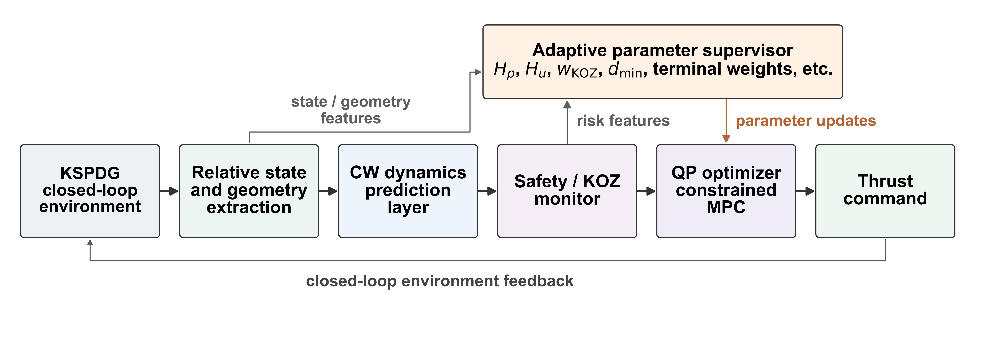
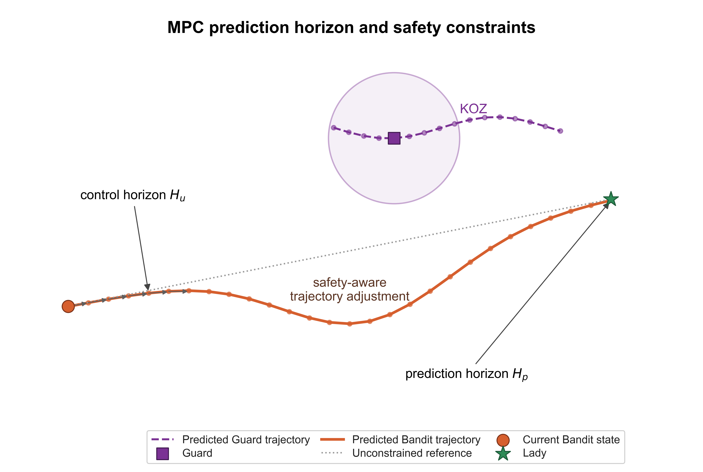
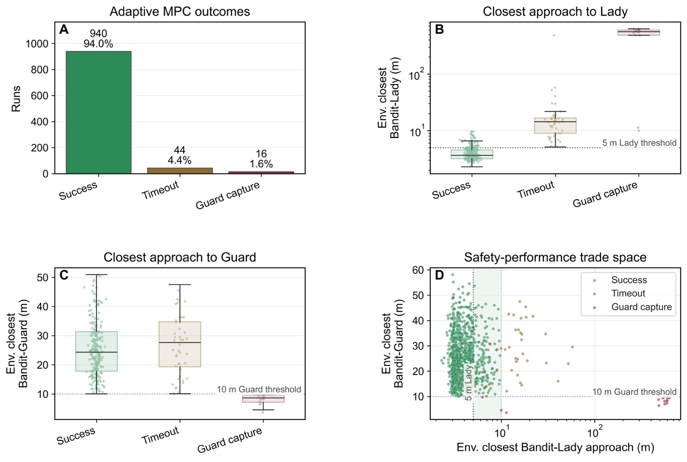
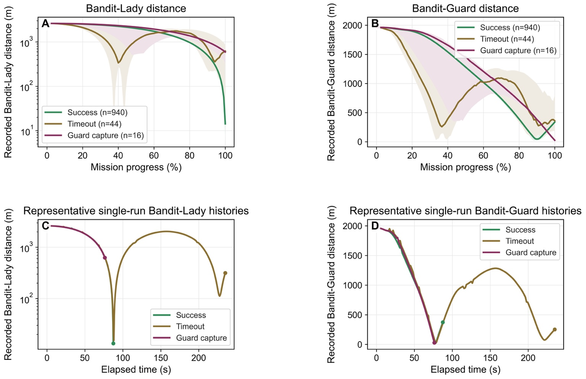
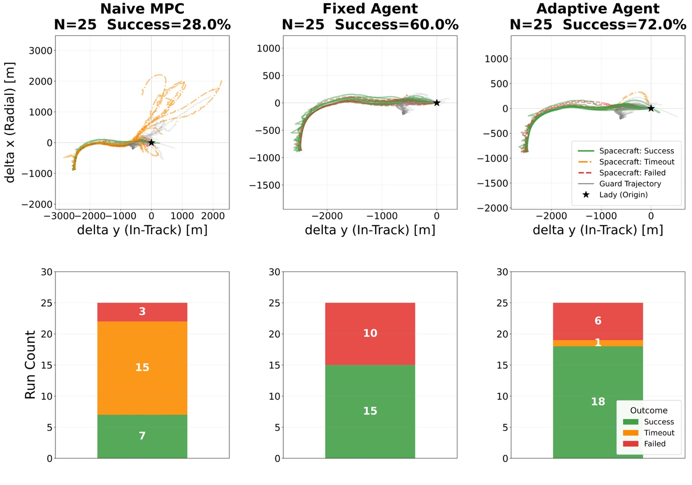
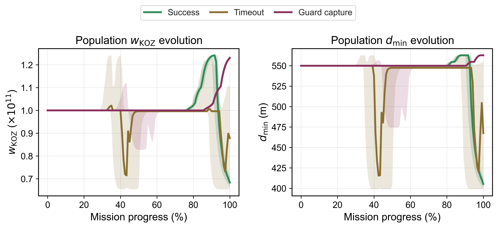
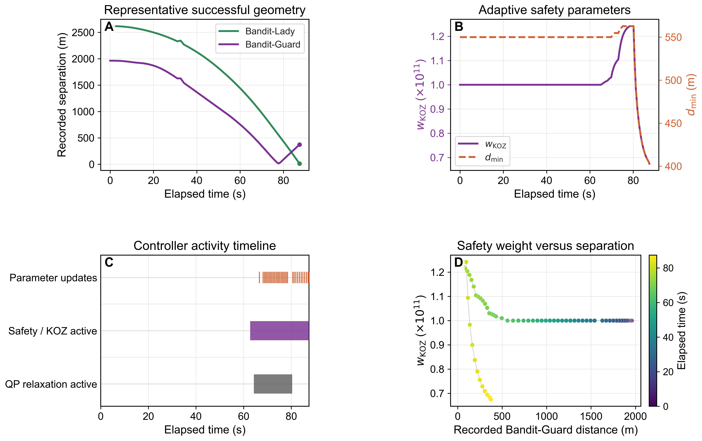

Relative orbital dynamics
The prediction model uses Clohessy-Wiltshire linearized relative orbital dynamics in the local LVLH frame, enabling computationally efficient real-time finite-horizon optimization.
Competition-winning adaptive spacecraft autonomy
A constrained receding-horizon MPC architecture where AI supervises interpretable optimization parameters, while the MPC layer remains responsible for thrust generation, actuator limits, predictive safety constraints, and real-time orbital guidance.
Place performance in the Capture the Satellite spacecraft-control competition environment.
Autonomous rendezvous and proximity operations in adversarial orbital environments require guidance systems that can pursue a target, preserve safety, and adapt online as the interaction geometry changes.
This work presents an AI-augmented Model Predictive Control framework for adversarial spacecraft RPO. The core idea is deliberately conservative: the adaptive layer does not directly command thrust. Instead, it modifies high-level MPC optimization parameters such as tracking weights, safety penalties, prediction horizons, and keep-out-zone objectives.
Core architecture

Overview of the proposed AI-augmented MPC framework. State and geometry features inform the adaptive supervisory layer, which updates bounded and interpretable MPC parameters. The constrained MPC/QP layer remains responsible for producing spacecraft thrust commands.
Method
The prediction model uses Clohessy-Wiltshire linearized relative orbital dynamics in the local LVLH frame, enabling computationally efficient real-time finite-horizon optimization.
At each control update, the inner loop solves a constrained quadratic program with actuator bounds, predictive keep-out-zone constraints, slack-variable feasibility handling, and optional CBF safety filtering.
The outer loop adapts selected optimization-level parameters online, producing strategic behavior while preserving the structure and interpretability of the underlying MPC problem.
Receding-horizon MPC form

Prediction horizon and predictive safety-constraint evaluation. The optimizer anticipates Bandit and Guard motion over the horizon and adjusts the trajectory when future keep-out-zone risk becomes active.
Results
adaptive MPC Monte Carlo runs
successful rendezvous outcomes
mission success rate
timeout cases
Guard-capture cases

Monte Carlo robustness evaluation over 1000 adaptive MPC trials, including mission outcomes, closest-approach statistics, and the safety-performance trade space.

Distance histories show the controller balancing target pursuit and Guard avoidance over normalized mission progress, with different trajectory signatures for success, timeout, and Guard-capture outcomes.
Controller comparison
Compared with naive and fixed-parameter MPC configurations, the adaptive controller can modify safety and tracking priorities online during adversarial encounters, while all control commands remain generated by the constrained MPC optimizer.

Representative comparison across naive MPC, fixed-parameter MPC, and adaptive MPC cases. The adaptive configuration exhibits more flexible behavior under evolving Guard-Lady-Bandit interaction geometry.
Recognition
The framework was evaluated in the official Kerbal Space Program Differential Game / SpaceGym Capture-the-Satellite environment, where the Embry-Riddle team achieved first-place performance in a real-time adversarial spacecraft-control exercise.
External coverage of the Capture the Satellite challenge and the competition environment.
Embry-Riddle NewsUniversity news coverage highlighting the team achievement and competition result.
Interpretability
Since adaptation occurs through bounded MPC parameters rather than unconstrained thrust commands, the controller can be analyzed through physically meaningful quantities such as the keep-out-zone weight, minimum-separation objective, target distance, and Guard proximity.

Population-level online variation in the Guard safety weight and minimum-separation objective over the adaptive MPC robustness dataset.

Parameter-geometry interpretability: adaptive parameter choices can be related to changing target pursuit and Guard-avoidance conditions.
Resources
Citation
@article{sportelli2026ai_augmented_mpc,
title = {AI-Augmented Model Predictive Control for Safe and Adaptive Rendezvous and Proximity Operations},
author = {Sportelli, Luca and Barr, Tyler and Kilic, Cagri and Wu, Di},
journal = {Under review},
year = {2026}
}